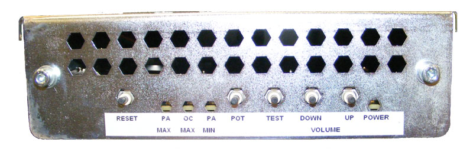

Operating Documentation
Direction 5193574-800, Rev# 22
LightSpeed 7.X Service Methods
Module Version 2.0, Version Date 4/21/09
Operating Documentation |
| Required Persons | Preliminary Reqs | Procedure | Finalization |
|---|---|---|---|
| 1 | 10 mins |
This is setup calibrations for the GOC6 Operator consoles.
| Last Revised: | 15 February 2009 |
Set the SCIM Autovoice Controls to mid range to start. While performing adjustments, these controls may be varied based on adjustment requirements.
The Host computer audio control adjustments (Autovoice Volume) should already be adjusted at installation. Fine adjustments of these software settings may be required. (See Section Autovoice Settings.)
The ICOM Chassis contains the following by reading the settings left to right, (See Illustration 1):
Illustration 1: ICOM Baord Adjustment Controls

RESET (push button)
Resets all volume settings to the factory presets.
PA MAX (LED) Patient Maximum
When lit, the volume push buttons will adjust the maximum volume that the patient will hear in the room from the operator or from Auto Voice. Select this POT to control the volume to a level that is the loudest/highest volume the patient can receive.
OC MAX (LED) Operator Maximum
When lit, the volume push buttons will adjust the maximum volume that the operator will hear from the patient or from Auto Voice. Select this POT to control the volume to a level that is the loudest/highest volume the operator can receive.
PA MIN (LED) Patient Minimum
When lit, the volume push buttons will adjust the minimum volume that the patient will hear in the room from the operator or from Auto Voice. Select this POT to control the volume to a level that is the quietest/lowest volume the patient can receive.
POT (push button)
Tap to cycle through the volume control potentiometers, Patient Minimum, Operator Maximum, and Patient Maximum.
TEST (push button)
Press the Test button to play a test tone.
DOWN and UP (push buttons) VOLUME Adjust
Press the Up and Down controls to adjust the selected volume.
POWER (LED)
The ICOM assembly is powered-on and energized when lit.
Push POT once to choose the patient minimum POT (the PA MIN LED should illuminate). Push POT again to choose the console speaker POT (the OC MAX LED should illuminate). Push POT again to choose the remote speaker POT (the PA MAX LED should illuminate). Pushing POT a fourth time will deselect all POTs and turn off all LEDs.
Push TEST once to generate a test tone through the selected POT channel.
Adjust the volume louder by pushing the VOLUME UP button, and adjust the volume softer by pushing the VOLUME DN button.
Push the RESET button to reset the POTs to their factory default setting.
Select the “Autovoice Volume” (“AudioSetting”) tool from the Tool Chest menu to increase the volume as needed.
Click [Save], then [OK]. Changing Autovoice settings may result in feedback issues.
Verify the gantry intercom board adjustments by performing Intercom Adjustment.